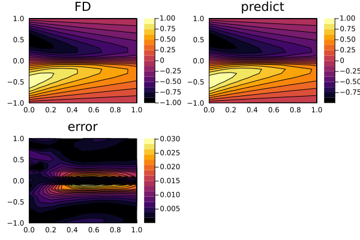

Solving PDEs using Deep Galerkin Method
Overview
Deep Galerkin Method is a meshless deep learning algorithm to solve high dimensional PDEs. The algorithm does so by approximating the solution of a PDE with a neural network. The loss function of the network is defined in the similar spirit as PINNs, composed of PDE loss and boundary condition loss.
In the following example, we demonstrate computing the loss function using Quasi-Random Sampling, a sampling technique that uses quasi-Monte Carlo sampling to generate low discrepancy random sequences in high dimensional spaces.
Algorithm
The authors of DGM suggest a network composed of LSTM-type layers that works well for most of the parabolic and quasi-parabolic PDEs.
\[\begin{align*} S^1 &= \sigma_1(W^1 \vec{x} + b^1); \\ Z^l &= \sigma_1(U^{z,l} \vec{x} + W^{z,l} S^l + b^{z,l}); \quad l = 1, \ldots, L; \\ G^l &= \sigma_1(U^{g,l} \vec{x} + W^{g,l} S_l + b^{g,l}); \quad l = 1, \ldots, L; \\ R^l &= \sigma_1(U^{r,l} \vec{x} + W^{r,l} S^l + b^{r,l}); \quad l = 1, \ldots, L; \\ H^l &= \sigma_2(U^{h,l} \vec{x} + W^{h,l}(S^l \cdot R^l) + b^{h,l}); \quad l = 1, \ldots, L; \\ S^{l+1} &= (1 - G^l) \cdot H^l + Z^l \cdot S^{l}; \quad l = 1, \ldots, L; \\ f(t, x; \theta) &= \sigma_\text{out}(W S^{L+1} + b). \end{align*}\]
where $\vec{x}$ is the concatenated vector of $(t, x)$ and $L$ is the number of LSTM type layers in the network.
Example
Let's try to solve the following Burger's equation using Deep Galerkin Method for $\alpha = 0.05$ and compare our solution with a finite difference reference solution:
\[\partial_t u(t, x) + u(t, x) \partial_x u(t, x) - \alpha \partial_{xx} u(t, x) = 0\]
defined over
\[t \in [0, 1], x \in [-1, 1]\]
with boundary conditions
\[\begin{align*} u(t, x) & = - \sin(πx), \\ u(t, -1) & = 0, \\ u(t, 1) & = 0 \end{align*}\]
Copy- Pasteable code
using NeuralPDE
using ModelingToolkit, Optimization, OptimizationOptimisers
using Distributions
using DomainSets: Interval
using IntervalSets: leftendpoint, rightendpoint
using Plots
@parameters x t
@variables u(..)
Dt = Differential(t)
Dx = Differential(x)
Dxx = Dx^2
α = 0.05
# Burger's equation
eq = Dt(u(t, x)) + u(t, x) * Dx(u(t, x)) - α * Dxx(u(t, x)) ~ 0
# boundary conditions
bcs = [
u(0.0, x) ~ -sin(π * x),
u(t, -1.0) ~ 0.0,
u(t, 1.0) ~ 0.0
]
domains = [t ∈ Interval(0.0, 1.0), x ∈ Interval(-1.0, 1.0)]
# Precomputed finite difference reference solution (from MethodOfLines.jl)
ts = 0.0:0.1:1.0
xs = -1.0:0.1:1.0
u_MOL = [
0.0 0.3090169943749475 0.5877852522924732 0.8090169943749475 0.9510565162951536 1.0 0.9510565162951535 0.8090169943749475 0.5877852522924731 0.3090169943749474 -0.0 -0.3090169943749474 -0.5877852522924731 -0.8090169943749475 -0.9510565162951535 -1.0 -0.9510565162951536 -0.8090169943749475 -0.5877852522924732 -0.3090169943749475 0.0;
0.0 0.23016456020398202 0.4492263249172652 0.6453567801796187 0.804982704408507 0.9121388844390722 0.9468262448092981 0.8846247315995217 0.703218686329628 0.3961051348157921 -8.403256515914785e-10 -0.39610528644636134 -0.7032235359810364 -0.8846509478358774 -0.9468532496335879 -0.9121437820703733 -0.8049822539299497 -0.6453566934729918 -0.44922632162153403 -0.23016456015430095 0.0;
0.0 0.18439456506579688 0.36356223505059254 0.5317229220911748 0.6816511245716946 0.8032198952911056 0.8807884520887236 0.8884549623747457 0.7802278844699573 0.48773996726586777 -8.332385139383502e-8 -0.4877415874292366 -0.7802477135039144 -0.888506360624352 -0.8808201736565814 -0.8032261687025581 -0.6816516487941336 -0.531722937152323 -0.3635622328023264 -0.18439456461389866 0.0;
0.0 0.15422623972636423 0.3055921540759203 0.4508977979977348 0.5860496609207286 0.7050529956270517 0.7977423064133746 0.8440809423933145 0.7977926569994513 0.5494455735927631 -1.7709563777360595e-6 -0.5494582832467099 -0.7978423786952952 -0.8441362229944129 -0.7977618035016357 -0.7050564157051358 -0.5860501474229867 -0.4508978639929831 -0.30559216038618386 -0.15422623972234029 0.0;
0.0 0.13274251573604537 0.2637544496372317 0.3910937025400468 0.5122586757756552 0.6235205786161723 0.7182860215057734 0.781894389692418 0.7724034832688323 0.5654192255729333 -8.831920293189788e-6 -0.5654375160568205 -0.7724073313577172 -0.7818929642258091 -0.7182878819302042 -0.6235220107825864 -0.5122591482090009 -0.39109381770786306 -0.26375447270680175 -0.13274251935290737 0.0;
0.0 0.11662010487842571 0.23211407439598758 0.3452162351589542 0.4542873544944033 0.556831962577267 0.6481861169320788 0.7167909979821157 0.724492898571832 0.545213348714522 -1.9276161784849284e-5 -0.5452376160058877 -0.7244789842320158 -0.7167791652337713 -0.6481861862781052 -0.556833235311411 -0.45428786793434184 -0.3452163910748499 -0.2321141166019175 -0.11662011472984442 0.0;
0.0 0.10405215638734382 0.20732910158777043 0.3089566869431128 0.4077890408023031 0.5020124725990738 0.5879190353500737 0.6552160626236753 0.6679012476563593 0.5052526754255898 -2.934980602272927e-5 -0.5052983255124378 -0.6679299735367314 -0.6552290863611969 -0.5879236890318579 -0.502014099175337 -0.40778960341388293 -0.3089568768079246 -0.20732916273021576 -0.10405217374116395 0.0;
0.0 0.09396738565987622 0.18737582845445297 0.2795898985909859 0.36975504821119454 0.4564317493811585 0.5363653620849153 0.5996919330710879 0.6112022575312647 0.45828172614432816 -3.6755244987188206e-5 -0.45833522270465604 -0.6112321118983421 -0.5997048695630902 -0.5363699401007025 -0.4564333813351606 -0.3697556455273214 -0.27959011870876554 -0.18737590776163476 -0.09396741090731145 0.0;
0.0 0.0856883337183803 0.1709566805391388 0.2553195195133458 0.338092970225699 0.4180169493506697 0.49192580754487114 0.5497666994151909 0.556933327676985 0.4110203339442246 -4.188141615067662e-5 -0.4110869752430649 -0.5569886762893315 -0.5497956454016975 -0.4919339301193105 -0.41801899151091915 -0.33809363247892676 -0.25531977081307566 -0.17095677766770256 -0.08568836692503531 0.0;
0.0 0.07876456406105145 0.15720050789765477 0.23491655334626807 0.3113220917714745 0.38521715280530666 0.45336795247110845 0.5054162776280646 0.5072158945918875 0.36696938711680344 -4.474059676568914e-5 -0.36703592124216705 -0.5072574194499785 -0.5054366065704419 -0.45337455928730425 -0.3852191681745752 -0.31132281064258116 -0.23491683864581528 -0.1572006234048806 -0.07876460535778612 0.0;
0.0 0.07288425058049804 0.14549989974559188 0.21751237895051007 0.28837101286341443 0.3568550973696773 0.41955914790174303 0.46575539721510667 0.4619833204532861 0.3272276449565788 -4.615855824540743e-5 -0.32729224157349524 -0.4620072354626463 -0.4657618705010458 -0.4195623150887295 -0.35685682771988164 -0.2883717851750601 -0.21751270388019428 -0.14550003543263415 -0.07288430042634352 0.0
]
# NeuralPDE, using Deep Galerkin Method
strategy = QuasiRandomTraining(256, minibatch = 32)
discretization = DeepGalerkin(2, 1, 50, 5, tanh, tanh, identity, strategy)
@named pde_system = PDESystem(eq, bcs, domains, [t, x], [u(t, x)])
prob = discretize(pde_system, discretization)
callback = function (p, l)
(p.iter % 20 == 0) && println("$(p.iter) => $l")
return false
end
res = solve(prob, Adam(0.1); maxiters = 100)
prob = remake(prob, u0 = res.u)
res = solve(prob, Adam(0.01); maxiters = 500)
phi = discretization.phi
u_predict = [first(phi([t, x], res.minimizer)) for t in ts, x in xs]
diff_u = abs.(u_predict .- u_MOL)
tgrid = collect(ts)
xgrid = collect(xs)
p1 = plot(tgrid, xgrid, u_MOL', linetype = :contourf, title = "FD");
p2 = plot(tgrid, xgrid, u_predict', linetype = :contourf, title = "predict");
p3 = plot(tgrid, xgrid, diff_u', linetype = :contourf, title = "error");
plot(p1, p2, p3)